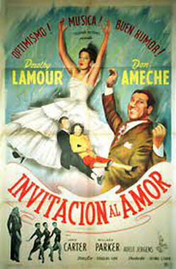
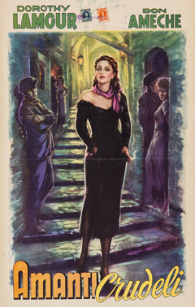
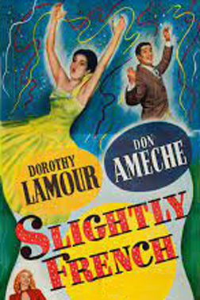

Slightly French
Dorothy Lamour
Janis Carter
Adele Jergens
Patricia Barry (uncredited)
Frank Ferguson (uncredited)
SYNOPSIS
Movie director John Gayle is a hard-to-work-with perfectionist and is fired by his best friend, a producer, for causing an actress to walk out of a movie production. He goes to the beach and wanders into a carnival. There he sees a clever Irish girl, Mary O'Leary, and decides to 'discover' her and regain his job. He takers her to his home and does a series of "Pygmalion" experiments with her. She becomes a fine actress and is hired by the movie studio, who believe her to be a French heiress. Gayle is hired to direct her but when she gives away the whole hoax, he is fired again.
The film was shot in January-February 1948, but not released until a year later, in February 1949. Dorothy Lamour sings, but it is obvious that the studio used a double for the dance numbers. Many shots were filmed in low light and at a distance.


